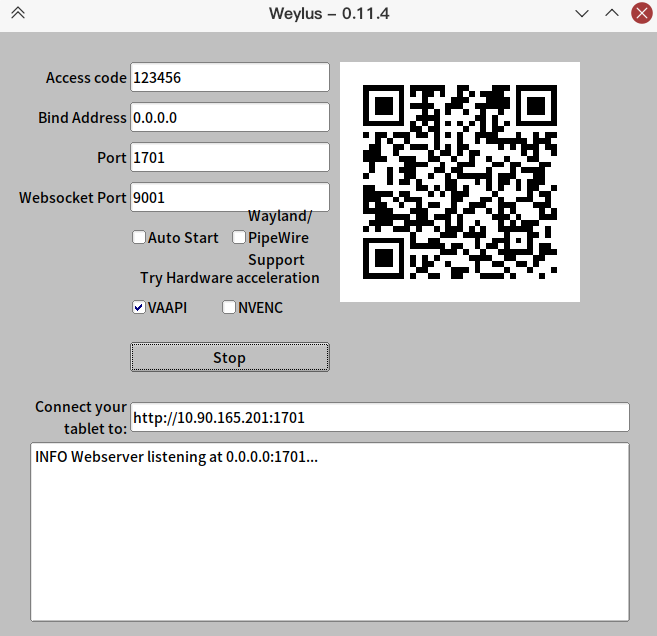

如果能将空闲的平板作为扩展屏幕，用来码字，看文档，那也不失为一种物尽其用！
本文利用Weylus/VNC作为工具，将PC上虚拟出的桌面用局域网广播的方式投送到平板上。
注意这是在Arch Linux KDE下测试的结果，理论上也适用于其他Linux发行版。对Win/Mac估计也能使用，但是本文不做讨论。
工具：Weylus
项目地址：https://github.com/H-M-H/Weylus
一、安装
二、配置虚拟桌面
Weylus的根本原理是将虚拟桌面广播，然后被平板接收，因此需要先在PC上虚拟出一个用于扩展的桌面。可以利用Intel显卡的虚拟桌面功能实现这个效果。
三、添加配置文件
你需要安装Intel驱动，然后创建/etc/X11/xorg.conf.d/20-intel.conf文件，“20”表示优先级别。
如果配置文件不生效，请尝试修改优先级，数字越小表示优先级越大。
1
|
sudo pacman -S xf86-video-intel
|
20-intel.conf文件内写：
1
2
3
4
5
6
7
8
9
10
11
|
Section "Device"
Identifier "你的intelGPU标识(通常是intelgpu0或者integrated)"
Driver "intel"
# 添加两个虚拟设备/屏幕
Option "VirtualHeads" "2"
# 如果出现闪烁，下面这些可能帮助你
# Option "TripleBuffer" "true"
# Option "TearFree" "true"
# Option "DRI" "false"
EndSection
|
Weylus利用这个用户组完成模拟输入事件。
1
2
3
|
sudo groupadd -r uinput
sudo usermod -aG uinput $USER
echo 'KERNEL=="uinput", MODE="0660", GROUP="uinput", OPTIONS+="static_node=uinput"' \ | sudo tee /etc/udev/rules.d/60-weylus.rules
|
五、设置虚拟屏幕
完成以上操作后，重启计算机。如果一切顺利的话，你使用xrandr命令会看见两个虚拟设备(VIRTUAL1和VIRTUAL2)：
1
2
3
4
5
6
7
8
9
10
11
12
13
14
15
16
17
18
19
20
21
22
23
|
Screen 0: minimum 8 x 8, current 2720 x 1280, maximum 32767 x 32767
eDP1 connected primary 1920x1080+0+100 (normal left inverted right x axis y axis) 340mm x 190mm
1920x1080 60.03 + 59.93*
1680x1050 59.88
1400x1050 59.98
1600x900 60.00 59.95 59.82
1280x1024 60.02
1400x900 59.96 59.88
1280x960 60.00
1368x768 60.00 59.88 59.85
1280x800 59.81 59.91
1280x720 59.86 60.00 59.74
1024x768 60.00
1024x576 60.00 59.90 59.82
960x540 60.00 59.63 59.82
800x600 60.32 56.25
864x486 60.00 59.92 59.57
640x480 59.94
720x405 59.51 60.00 58.99
640x360 59.84 59.32 60.00
HDMI1 disconnected (normal left inverted right x axis y axis)
VIRTUAL1 disconnected (normal left inverted right x axis y axis)
VIRTUAL2 disconnected (normal left inverted right x axis y axis)
|
其中eDP1是笔记本的屏幕，HDM1是外接的物理屏幕，VIRTUAL1/2是显卡虚拟出来的屏幕。
六、为虚拟屏幕设置分辨率
1
2
3
4
5
|
gtf 1280 800 60
xrandr --newmode "1280x800_60.00" 83.46 1280 1344 1480 1680 800 801 804 828 -HSync +Vsync
xrandr --addmode VIRTUAL1 1280x800_60.00
xrandr --output VIRTUAL1 --mode 1280x800_60.00
xrandr
|
其中1280和800是虚拟屏幕的分辨率，你可以根据你的平板大小来调节这个分辨率。
每次开机后都需要进行这个操作，因此可以将这几个命令写成shell脚本，加入开机任务中。这里不作讨论。
图中的VIRTUAL1就是刚刚设置的，我又将他旋转了一下(分辨率设置操作前应该没有这个VIRTUAL1显示出来)
七、开始使用Weylus
打开Weylus,设置密码后在平板上用浏览器扫描二维码或者输入网址打开即可。

在浏览器打开的网页中，将捕获的设备更换为“Monitor：VIRTUAL1”。

八、缺点
因为是画面是通过网络传播，会经过一系列的编码和解码过程，难免出现延迟，因此这种方式只适合对延迟要求低的任务：码字，阅读pdf等。
九、降低延迟
如果要想降低些许延迟，可以用VNC代替Weylus，更换一个传输协议也是有效果的！！
安装VNC。
设置VNC密码。
获取内网地址，192.168.xxx.xxx就是你的本机内网地址。
1
2
3
4
5
6
7
8
9
10
11
12
13
14
15
16
17
18
|
ip a
1: lo: <LOOPBACK,UP,LOWER_UP> mtu 65536 qdisc noqueue state UNKNOWN group default qlen 1000
link/loopback 00:00:00:00:00:00 brd 00:00:00:00:00:00
inet 127.0.0.1/8 scope host lo
valid_lft forever preferred_lft forever
inet6 ::1/128 scope host
valid_lft forever preferred_lft forever
3: wlan0: <BROADCAST,MULTICAST,UP,LOWER_UP> mtu 1500 qdisc noqueue state UP group default qlen 1000
link/ether 0c:dd:24:1e:d4:99 brd ff:ff:ff:ff:ff:ff
inet 192.168.139.152/24 brd 192.168.139.255 scope global dynamic noprefixroute wlan0
valid_lft 2248sec preferred_lft 2248sec
inet 192.168.139.153/24 brd 192.168.139.255 scope global secondary dynamic noprefixroute wlan0
valid_lft 2254sec preferred_lft 1804sec
inet6 fe80::e705:33d5:1bfd:c0ac/64 scope link noprefixroute
valid_lft forever preferred_lft forever
inet6 fe80::3728:30f7:2ac9:7de6/64 scope link
valid_lft forever preferred_lft forever
|
利用VNC将虚拟桌面“VIRTUAL1”广播出去。其中5900是端口号，-wait 是捕获速度，-defer是广播速度，-sb 0 表示一直捕获。详细设置请查看：man x11vnc
1
|
x11vnc -rfbport 5900 -clip xinerama1 -wait 1 -defer 1 -nowf -sb 0
|
在平板上安装VNC，可以使用bVNC，VNC Viewer等软件。
ip填PC的内网ip，端口是5900，密码是你刚刚设置的VNC密码。
经过我的测试，VNC的延迟会比Weylus小一点点，当然，就一点点而已。：）